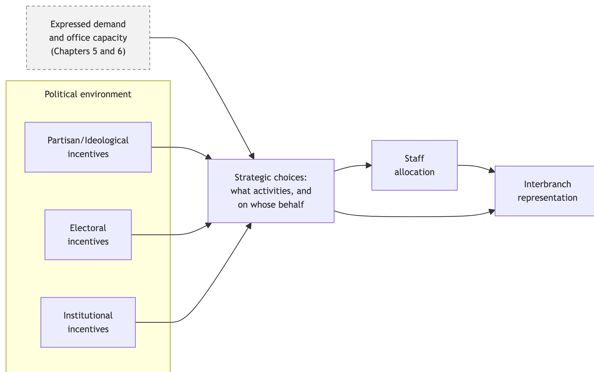
7 How Strategic Incentives Affect Interbranch Representation
ABSTRACT: How does the political environment shape the strategic incentives for legislators to engage in interbranch representation? How do incentives shape who is represented and the kinds of work congressional offices prioritize? In this chapter, we explore how incentives shape decisions about how much to prioritize interbranch representation, what type of interbranch activity to do (policy or constituency service), and on whose behalf to do it (constituents, companies, nonprofits, or local governments). We find that interbranch representation is shaped by partisan, ideological, electoral, and institutional incentives. Generally, we find alignment (working with allies) outweighs antagonism in driving interbranch work. On the electoral side, we see House members in competitive districts doing more constituency service, but no evidence that this is causal. However, competitive primaries may cause House members to increase constituency service. Institutionally, we see majority status inducing members of the House to do more policy work and less constituency service work, but no change in Senators’ behavior. Finally, supporting staff allocation as a plausible mechanism by which priorities translate to differences in representation, we find that allocating more staff to a given type of interbranch work leads to more of that work getting done.
In Chapter 5 and Chapter 6, we examined the first two elements of our framework of interbranch representation: constituent demand and member office capacity. We found that sources of constituent demand (number, empowerment, and needs of constituents) shape the interbranch representation work done by congressional offices — especially the volume of constituency service, which often needs to be initiated by a constituent. We also found that capacity shapes how much of that work offices are able to do. That is, offices are capacity constrained — they are not helping all of the constituents or doing all of the interbranch policy work they could with more capacity. This implies that they face choices about what to prioritize. And indeed, we observe that legislators who face similar demands, with similar resources, nevertheless differ considerably in which agencies they contact, about what (constituent service or policy), and on whose behalf.
In this chapter, we show that differences in interbranch representation reflect political choices legislators make about how to allocate their time, effort, and staff resources. Unlike most legislative work, which is often constrained by the number of seats a legislator’s party holds in Congress, or the party’s agenda, interbranch representation is largely at the discretion of each congressional office, which makes it an unusually clear window into legislators’ strategic behavior. This third element of our framework: strategic incentives. Hypothesis 3 (strategic incentives), introduced in Chapter 2, expects that the political environment shapes the strategic choices legislators make about how much, and what kinds of, interbranch representation to do. As Figure 7.1 shows, demand and capacity set the conditions under which offices act, while partisan, ideological, electoral, and institutional incentives shape the activities legislators pursue and on whose behalf. The allocation of staff within a congressional office reflects these choices and helps carry them out.
Strategic incentives present more complex predictions than constituent demand and capacity constraints. We clearly expected all forms of demand and capacity to increase interbranch representation, but strategic incentives can push in different directions. Partisan incentives, for example, could lead legislators to work more with agencies run by their allies in collaborative policymaking and implementation. Alternatively, legislators could allocate more attention to agencies run by their opponents in the form of oversight or combative interbranch work (like Lowande (2018), we find interbranch work to be more collaborative than antagonistic, but dynamics are plausible). In the sections that follow, we develop specific empirical expectations for three broad sources of strategic incentives (partisan/ideological, electoral, and institutional) and test them using the same models as in the previous chapters.
We follow those analyses with an examination of a mechanism of how legislators turn priorities into interbranch work: strategic choices about how to allocate their staff. Using new data on congressional staffing, we descriptively examine those allocation choices, and then examine whether staff allocation decisions translate into the provision of different forms of interbranch representation.
We find that strategic incentives shape who legislators represent more than how much interbranch representation they do. Moderate House Republicans do more constituency service for individuals and businesses, while Democrats in both chambers do more work on behalf of nonprofits and local governments and more policy work. Compared to moderates, more right-wing Republicans do even less policy work, even on behalf of businesses. More left-wing Democrats also do less policy work on behalf of businesses, even as they do more policy work overall.
Majority status also has complicated effects, made even more complex by its structural relationship with committee chair positions. Controlling for committee chair status, House members whose party becomes the majority do slightly less individual constituency service, less nonprofit and local government service, and slightly less interbranch representation overall. Coming into the majority, however, does induce more general policy work. However, that dynamic partly reflects the capacity gains of members who become committee chairs, and is more attenuated for backbench majority party members who gain majority status. Ultimately, majority status effects are probably best attributed to capacity gains rather than strategic behavior.
Ideological distance from an agency also works in different ways for different types of interbranch representation: legislators do more work on behalf of nonprofits and local governments when they are closer to an agency but more corporate policy work when they are ideologically more distant from an agency. Most policy work on behalf of business takes the form of opposing regulation, so it makes sense that allyship operates differently in this context.
Consistent with theories of “presidential pork” (Berry et al. 2010), legislators who share the president’s party do more work on behalf of nonprofits and local governments. Electoral competition has a less consistent relationship with interbranch representation, but we find some evidence that members of the House in competitive districts or who recently faced a competitive primary may do more constituency service.
7.1 Three Sources of Strategic Incentives
Unlike capacity, which we expect to have a positive relationship with interbranch representation, strategic incentives can push legislators toward more or less of this work, and toward some kinds of work and constituents rather than others. We consider three features of the political environment that may shape legislators’ strategic incentives about interbranch representation: (1) partisan and ideological features, (2) electoral features, and (3) institutional features.
Partisanship and Ideology
Hypothesis 3A (Partisan). Interbranch representation varies by partisanship and ideology. These incentives could push in opposite directions, depending on whether interbranch work is mainly collaborative (Hypothesis 3A(alignment)) or adversarial (Hypothesis 3A(antagonism)).
Alignment or antagonism. If interbranch work focuses on procuring benefits for constituents, we should see more work among partisan and ideological allies. For example, members of the president’s party receive more federal spending in their districts (Berry et al. 2010). Interbranch representation is at the nexus of Congress and the executive branch. Expecting relatively greater success, members of the president’s party may thus engage in higher levels of interbranch representation on behalf of constituents seeking federal funding (businesses, nonprofits, and local governments).1 Supporting this intuition, Lowande (2019) more politicized agencies (with a higher ratio of political appointees) respond more quickly to legislators from the President’s party.
A similar logic of working with friends and receiving a warmer reception applies for agencies that are ideologically closer to the legislators. This may be in part because of the way that party coalitions represent interests. For example, the U.S. Department of Agriculture (USDA) may be perceived as conservative in part because it represents Republican-dominated rural states, and the Department of Housing and Urban Development (HUD) may be perceived as liberal because it represents more urbanized states dominated by Democrats. If interbranch work is about procuring benefits, we would expect rural representatives to work more with USDA and urban representatives to work more with HUD, thus producing a pattern of interbranch work favoring allies in one’s policymaking and implementing coalition. This leads to our hypothesis about how alignment may lead to more interbranch representation.
Hypothesis 3A(alignment) (Alignment). Legislators from the president’s party will do more interbranch representation, and legislators who are ideologically closer to an agency will do more interbranch representation with that agency.
The logic of Hypothesis 3A(alignment) suggests that interbranch representation on behalf of those seeking federal funding and policy benefits (businesses, nonprofits, and local governments) will be greater with aligned presidents and agencies. The logic of policymaking and implementing coalition suggests that policy work should target aligned agencies, reflecting interests that transcend presidential administrations.
Alternatively, if interbranch work focuses more on oversight than procuring policy benefits, we might see the opposite. While members of the president’s party might anticipate a friendlier reception from executive branch agencies during that administration, members of the opposition party might have greater incentives to engage in oversight of an executive branch controlled by an opposing party’s president (but see Lowande 2018). Similarly, we might expect the constituents of opposition party legislators to have more concerns or problems with agencies under an administration that prioritizes different constituents or disfavored policies. Lastly, Ritchie’s argument that legislators turn to backdoor policymaking when they confront obstacles in the legislative process applies here, too. Faced with a president more likely to veto their legislative proposals, opposition legislators may turn to backchannel policymaking (Ritchie 2023). This leads us to a hypothesis about how partisan/ideologoical antagonism may drive interbranch representation.
Hypothesis 3A(antagonism) (Antagonism). Legislators from the party opposing the president will do more interbranch representation, and legislators who are ideologically more distant from an agency will do more interbranch representation with that agency.
The logic of antagonism is most applicable to policy work (recall, we code oversight work as policy work).
Party coalitions. Party coalitions suggest some divergence with respect to which constituencies legislators represent, with Republicans typically perceived as being friendlier to business interests (Gimpel et al. 2014).
Hypothesis 3A(business) (Business coalition). Republicans will do more interbranch representation on behalf of businesses.
Ideological factions. Ideology may also matter for legislators’ interbranch representation, as more bipartisan (and therefore more ideologically “moderate,” per DW-NOMINATE scores) legislators are more effective at pursuing their policymaking goals through lawmaking (Harbridge-Yong et al. 2023). This could have countervailing effects. On the one hand, if interbranch representation is a substitute for legislating, the relative opportunity costs could incentivize less “moderate” legislators to focus more on forms of representation other than the legislative process. On the other hand, if legislating and interbranch work are complementary, or if less “moderate” legislators face similar challenges in interbranch work that they face in the legislative process, then these legislators with higher ideology scores may do less.
With the Republican Party’s asymmetric shift to the right and growing Tea Party and Freedom Caucus wings in recent years (Blum 2020; Green 2019; Lee 2026), we may thus expect different dynamics in the wings of each party. A notable focus of these factions has been on reducing the size of the federal government (Grossmann and Hopkins 2016) and attacking the administrative state (Metzger 2017; Skowronek et al. 2021; Moynihan 2022). For these reasons, we might imagine Tea Party and Freedom Caucus Republicans to be especially less likely to engage in interbranch representation that involved working with federal agencies. Because the Democrats’ left wing generally favors more government action and involvement, we would not expect to see such an effect for all ideologically extreme legislators.
Hypothesis 3A(anti-government) (Anti-government). Tea Party and Freedom Caucus Republicans will do less interbranch representation.
The anti-administrative state logic of Hypothesis 3A(anti-government) applies most strongly to policy work. While the “smaller government” logic may seem to support more work on behalf of state and local governments at first blush, Tea Party politicians often rejected federal funding, even those that which went to state and local governments, so this logic, too, points in the direction of less work on behalf of those seeking funding or benefits from the federal government.
Electoral Incentives. While it is difficult to measure a legislator’s incentive structure directly, we can identify situations in which legislators are likely to prioritize certain goals. Perhaps the most widely recognized strategic incentive of legislators is reelection (e.g., Mayhew 1974; Cain et al. 1987; Fiorina 1977; Fenno 1973). As David Mayhew famously wrote in Congress: The Electoral Connection, “[Reelection ] has to be the proximate goal of everyone, the goal that must be achieved over and over if other ends are to be entertained” (Mayhew 1974, pg. 16). Legislators motivated by electoral concerns might devote additional attention and resources to helping their constituents, so that those constituents will vote to reelect the legislator (Dodd 1977; Fiorina 1977; Cain et al. 1987; Serra and Cover 1992; Serra and Moon 1994; Dropp and Peskowitz 2012; Ashworth 2012). Legislators who do find themselves in an electorally vulnerable political environment are likely to prioritize reelection, possibly by attempting to build a reputation for constituency service, to be the face of an oversight investigation, to deliver policy benefits to their district, or to invest in fundraising to build a campaign war chest.
Hypothesis 3B (Electoral). Electoral incentives shape how much and what kinds of interbranch representation legislators do as they respond to competition Hypothesis 3B(competition) and engage in fundraising that electoral competition demands Hypothesis 3B(donors).
Members of Congress purport to believe that constituency service work will help their reelection efforts, with 44% of members saying they believed reelection was the primary reason most members perform constituency service (Johannes 1984, pg. 13). This intuition has some empirical grounding. In their exploration of why Americans like their individual member of Congress more than Congress the institution (what has become known as “Fenno’s paradox”), Parker and Davidson (1979) found that Americans evaluate the institution of Congress based on its legislative performance, the style and pace of the legislative process, and legislative-executive relations. At the same time, they judge individual members of Congress on the basis of two factors: constituency service and the legislator’s personal characteristics. This leads us to expect that electoral competition increases interbranch representation.
Hypothesis 3B(competition) (Electoral competition). Legislators whose prior general or primary election was competitive will do more interbranch representation.
The Hypothesis 3B(competition) logic applies most strongly to constituency service. While competition may also incentivize credit claiming for oversight and policy benefits, there are reasons to be skeptical. In contrast to the expectation that electorally vulnerable legislators will do more constituency service, Ritchie (2023) found no consistent relationship between policy work with federal agencies and electoral vulnerability. Another potential reason for caution regarding the relationship between electoral vulnerability and interbranch representation is the invisibility of most interbranch work. Although reelection motives have long been posited as a motivation to engage in constituency service, a skeptic might question whether allocating time and resources to a largely invisible activity rather than something more visible like communications or legislation is the best strategy. While acts of constituency service might be visible to an individual who has been helped, as well as their friends and family, one would have to assume fairly large social network amplification effects for it to reach enough voters to make an electoral difference at a time when the size of the average House district is over 760,000 people (Eckman 2026).
Thus far, we have focused on how electoral motivations could drive legislators to focus more on constituent concerns. We could think of this as legislators responding to an electoral threat by working harder for constituents when they are scared of losing their seats (Mayhew 1974; Fiorina 1977). An alternative mechanism that could explain electorally vulnerable legislators doing more interbranch representation is selection. In a selection-based story, legislators who hold competitive seats may differ from those who hold safe seats. A robust formal theory literature considers the role that elections (voters and parties) play in selecting candidates that deliver (Ashworth 2012). Galasso and Nannicini (2011) examine whether electoral competition is good for political selection, presenting both a formal model and empirical results from the Italian parliament. They find, consistent with their model’s predictions, that “higher-quality” candidates are more likely to run in competitive districts and politicians elected in competitive districts perform better in the sense that they have fewer absences. These differences are due to selection more than to reelection incentives. If competitive elections select higher-quality legislators, then we may observe a relationship between electoral competition and interbranch representation for reasons other than as a response to reelection concerns. An alternative relationship could also exist: politicians who provide more constituency services (among other performance indicators) could deter strong challenges, so that a reputation for high-quality performance could help contribute to larger electoral margins. Indeed, the work of Fiorina (1977) and others who have argued that constituency service contributes to the incumbency advantage may suggest exactly that.
Our two different types of models — the across-legislator models and the within-legislator models —may help us disentangle these complex relationships. Comparisons across legislators cannot distinguish responses to the political environment from differing district characteristics or effects operating through selection. Comparing the same legislator before and after their seat becomes competitive, however, can make this distinction.
Corporate fundraising Legislators also choose on whose behalf to advocate. Research on campaign contributions has generally found that money does not buy roll call votes (Ansolabehere et al. 2003), but highly visible votes may be one of the least desirable channels of influence (Powell and Grimmer 2016). The relative invisibility of interbranch representation may make it a more attractive pathway for the influence of campaign contributions. Indeed, legislators who received more contributions from energy company PACs did more interbranch advocacy on behalf of corporate interests in their dealings with the Federal Energy Regulatory Commission (Powell et al. 2023).
Hypothesis 3B(donors) (Corporate donors). Legislators who receive more corporate PAC contributions will do more interbranch representation on behalf of businesses (corporate constituency service and corporate policy work).
The logic of hyp-strategy-electoral-donors is strongest at agencies that are affected by the interests of the corporate donors — for example, energy company donations ought to predict corporate service and policy work with the Department of Energy and agricultural-sector donations ought to predict corporate service and policy work with the Department of Agriculture.
Institutional Incentives
A central form of institutional advantage is being a member of the majority party, in which it is easier to achieve legislative goals. Thus, legislators who are in the majority may invest more in legislative work, which may result in their doing less interbranch representation. In her research on backdoor policymaking with federal agencies, Ritchie argues that legislators are most likely to turn to backchannel lawmaking by appealing directly to federal agencies when they face obstacles in the legislative process (Ritchie 2023). Majority legislators encounter a much friendlier legislative environment and may thus be less likely than minority legislators to turn to backchannel policy appeals to bureaucratic agencies.
Hypothesis 3C (Institutional). Legislators in the majority party will do less interbranch representation.
Mechanism: Staff Allocation
The last strategic choice that we consider is how legislators allocate their staff. Where Chapter 6 examined how many staff an office has, here we consider how offices divide them across different tasks. Legislators who choose to prioritize a certain type of activity may want to devote more staff resources to accomplish that objective (Reynolds 2020). Thus, we can view staff allocation choices (in the form of the number of people they hire or the amount of a legislator’s office budget that they spend on constituency service staff, for instance) as a reflection of the member’s priorities, and thus a strategic choice they are making. We argue that member offices that devote more resources to staff who do a certain type of work are likely to produce more of that type of work.
Hypothesis 3D (Staff allocation). Offices that allocate more staff to a type of work will do more of that type of interbranch representation.
7.2 Measuring Strategic Incentives
Legislators may strategically respond to their political environment in a number of ways, some of which may affect how they allocate their office capacity. We model features of the political environment to which legislators are likely to respond strategically: ideological distance from federal agencies, electoral competitiveness, majority party status, and whether the legislator is a member of the president’s party. To this, we add indicators of political party and ideology or faction. Finally, we measure legislators’ choices about staff allocation, which likely reflect strategic choices about the kind of work that they wish to prioritize.
To assess the ideological distance between members of Congress and each federal agency, we compare members’ first dimension. DW-NOMINATE scores (Lewis et al. 2024) with survey-based measurements of federal agencies’ perceived ideological leanings (Richardson et al. 2018). To measure the ideological distance between members of Congress and federal agencies, we subtract each member’s first-dimension DW-NOMINATE score from the ideology score of each agency.2 For example, Senator Bernie Sanders, with a NOMINATE score of -0.545 (liberal), has a distance close to zero with the Department of Labor’s Mine Health and Safety Administration with a score of -0.580 (liberal), but a distance close to 1 with the United States Trade Representative (USTR) with a score of 0.439 (conservative). The largest distance in our data is 2.66 between the Office of the Secretary of Defense and Joint Staff (1.91) and Carte Goodwin (-0.747). To help guard against conclusions about distance being driven by distance from zero on the DW-NOMINATE scale, we control for the absolute value of the first dimension of DW-NOMINATE. We also use other legislator-level variables from Lewis et al. (2024), including party membership to derive majority status and whether a legislator is a member of the president’s party.
To test Hypothesis 3A(anti-government), we approximate a Freedom Caucus- or Tea Party-aligned faction of the republican party by using a cut point of a DW-NOMINATE score of 0.5 and above. While this is not the same as caucus party membership, it captures nearly all members of these factions and has the advantage of being a consistent measure over time. These actual caucus memberships do not exist for our entire time period and evolve substantially. Thus, the NOMINATE-based measure lets us measure this faction of very conservative legislators in a more consistent way over time, based on the alignment of their voting records rather than caucus membership.
For data on electoral competitiveness, we start with data from Thomsen (2023) on vote share in primary and general elections, adopting her definition of whether an election was competitive. For general election competitiveness, we fill in gaps in the Thomsen (2023) data by applying a similar decision rule (whether the winner received less than 57.5% of the vote) to vote share data compiled by Volden and Wiseman (2014) and Volden and Wiseman (2018). Notably, the average percent of members of Congress whose prior election was competitive (weighted by the number of agencies for which we have data for that year) was 30% for general elections and 10% for primary elections (House only). The number of districts that change from non-competitive to competitive is even smaller, possibly frustrating tests for the effect of electoral competitiveness.
To measure corporate fundraising, we use the total contributions each legislator received from corporate political action committees in the prior Congress (Bonica 2024). For the Department of Energy case study, we use contributions from energy sector PACs specifically (as described in Powell et al. 2023).
For Hypothesis 3C, we use an indicator for whether a legislator’s party held the majority in their chamber in that Congress, derived from party membership in Lewis et al. (2024).
To measure staff allocation, we use the number of staffers working in casework positions in each legislator’s personal office based on LegiStorm’s staff titles (LegiStorm 2026)—most of the staff positions we classified as caseworkers had “casework” in the job title.
Table 7.1 summarizes how we measure each source of strategic incentives and what each indicator predicts.
| Sub-hypothesis | Indicators | Predicted relationship |
|---|---|---|
| Partisan and ideological incentives (Hypothesis 3A) | ||
| Alignment | President’s party Ideological distance to agency |
↑ all types ↓ with that agency |
| Antagonism | President’s party Ideological distance to agency |
↓ all types ↑ with that agency |
| Conservative business coalition | Republican | ↑ corporate service and corporate policy |
| Antigovernment | Tea Party/Freedom Caucus/Right Wing | ↓ all types | | ||
| Electoral incentives (Hypothesis 3B) | ||
| Electoral competition | Competitive general Competitive primary |
↑ all types |
| Corporate Campaign Contributions | Corporate PAC money | ↑ corporate service and corporate policy |
| Institutional incentives (Hypothesis 3C) | ||
| Majority status | Majority party | ↓ all types |
| Mechanism: how staff allocation translates to interbranch work (Hypothesis 3D) | ||
| Staff allocation | Number of Casework staff | ↑ constituency service |
7.3 Results
To estimate how strategic incentives relate to interbranch representation, we use the same models reported in Chapter 5 and Chapter 6. (Modeling the number of contacts of each type that a legislator’s office makes with each federal agency in a given year, using negative binomial regressions with standard errors clustered by legislator.) Each model includes all of the strategic incentive measures together, controlling for all of the demand and capacity indicators discussed in the prior chapters. For three results, we use slightly modified versions of this main model. First, to estimate the effects of majority status on interbranch work, we add a majority status indicator to Equation C.1. We also estimated modified models with majority status but without committee leadership variables. Respectively, these two sets of models estimate the effect of majority status among (1) non-committee leaders and (2) overall, including committee leadership effects. Second, because fundraising is also closely tied to committee positions as both a cause of appointment to chair positions and an effect of leadership positions, we did not include PAC fundraising in the main specification to estimate committee leadership effects. To estimate relationships with PAC contributions, we estimated separate models, identical to Equation C.1, but adding PAC contributions. Third, our main specification estimates the relationship between political party and interbranch representation, controlling for the absolute value of 1st Dimension DW-NOMINATE scores. To estimate the difference in interbranch representation done by the “right wing” faction, we estimate modified models where we substitute a “right wing” indicator for the party indicator and the absolute value of 1st Dimension DW-NOMINATE scores. Finally, to compare “right wing” legislators to “moderates,” we add a control for “left wing” (NOMINATE scores less than -.05). These alternative models are available online in Appendix E, along with other models estimated as robust checks.
Recall that we estimated both cross-sectional and within-legislator models where possible. Some strategic incentives change over a legislator’s career: legislators gain or lose a co-partisan president, move between the majority and minority, and face more or less competitive elections. For these, within-legislator models compare the same legislator before and after the change. Others rarely or never change within a legislator’s career, including party and ideology, so for these we rely on cross-sectional comparisons. Few districts change from safe to competitive, which limits what within-legislator models can tell us about electoral competition. Because cross-sectional comparisons cannot rule out that legislators who face different incentives also differ in other ways, we interpret these results more cautiously than the within-legislator estimates in Chapter 6.
As in the prior chapters, we report the percent difference in expected contacts associated with each indicator (or with a one standard deviation increase, for continuous measures such as ideological distance, PAC contributions, and employees). As before, these figures are labeled “marginal effects,” describing the method of counterfactual estimation, but are better understood as average differences for cross-sectional models. In each figure, points mark the estimated difference in interbranch representation, both overall and for each of the five types of interbranch representation. Horizontal lines show 95% confidence intervals. Panel labels indicate whether estimates are cross-sectional or within-legislator and whether they come from House, Senate, or pooled models. Full results are in Appendix C.
Partisan and Ideological Allies Mostly Work Together
Partisan and ideological incentives drive interbranch work in several ways (Hypothesis 3A). Rather than full support for all partisan and ideological sub-hypotheses, we find different parts of Hypothesis 3A supported for different kinds of interbranch work.
Presidential Alignment, Not Antagonism
We begin by considering the countervailing incentives related to alignment (Hypothesis 3A(alignment)) and antagonism (Hypothesis 3A(antagonism)) with the president. Figure 7.2 shows the marginal effect of being a member of the president’s party, all else held equal, on interbranch representation. Overall, we see support for alignment outweighing antagonism: members of the president’s party engage in approximately 3.5% more total interbranch representation in the diff-in-diff models.3 If we dive into the sub-types of interbranch representation, we mostly see a similar pattern with congressional offices doing more when the president becomes a co-partisan. However, the effect size varies from a low of 4% for individual constituent service to a high of 28% for nonprofit and local government service. Notably, the exception to this alignment story is for general policy work, where the point estimate is near zero and not statistically significant. That the alignment hypothesis fails in precisely the category—general policy work—where we put traditional forms of congressional oversight suggests that our traditional understanding of adversarial antagonism may play a countervailing role there, offsetting the collaborative policy work.
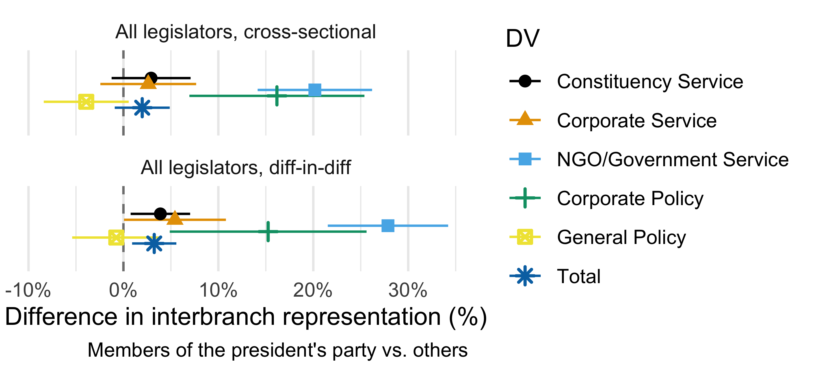
Agency-level Antagonism and Alignment
In the last section, we examined how partisan alignment between a legislator and the presidency influenced interbranch representation. A different approach to measuring alignment or antagonism looks at agency-specific ideology measures — for example, even under the same president, the Department of Defense is viewed as more conservative than the Environmental Protection Agency. Do legislators engage more with distant agencies (Hypothesis 3A(antagonism)), or do we see more interbranch work coming from ideologically proximate legislators — aligned allies in policymaking and implementation (Hypothesis 3A(alignment))?
Legislators engaging more with agencies that they perceive as ideologically similar or distant is more about which agencies representatives target, rather than how much they do overall. Figure 7.3 shows the marginal effect of a one standard deviation increase in a legislator’s ideological distance from an agency.4 We see no difference in individual constituency service or corporate service. But we see opposite alignment vs. antagonism patterns for our other forms of interbranch representation. General policy work (-16%), nonprofit/local government service (-15%), and total interbranch representation (-6.5%) follow a pattern of alignment, where more ideologically distant legislators do less work with the agency. On the antagonism side, we see more ideologically distant legislators engage in substantially more corporate policy work (+28%). This suggests that legislative offices may be doing policy work on behalf of certain industries by advocating to the regulators of those industries (e.g., conservatives representing industry interests to the Environmental Protection Agency, which is perceived as ideologically distant). This pattern fits the data, where many of the requests we coded as corporate policy work are industry-aligned comments on proposed agency regulations. This aligns with prior work using public comment data that finds that members of Congress disproportionately align with business-led coalitions in agency rulemaking (Judge-Lord 2021).5.
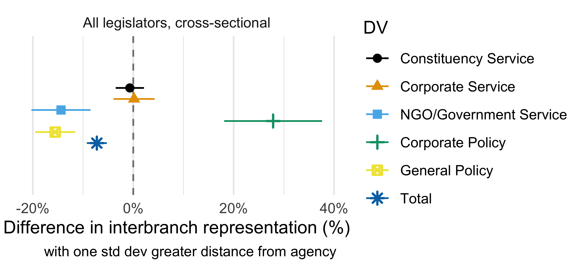
Conservative Business Coalition Supports Corporate Service, but Not Corporate Policy
As expected, House Republicans do significantly more corporate constituency service (Figure 7.4)—nearly 30% more than House Democrats on average. The relationship is smaller and not statistically significant for Senators. Interestingly, Republicans do not do significantly more policy work on behalf of businesses. Though the correlation is positive in the House, it is negative in the Senate (neither being statistically significant). We estimate these effects using cross-sectional models only, because there are not enough legislators who switched parties to allow us to identify within-legislator effects.
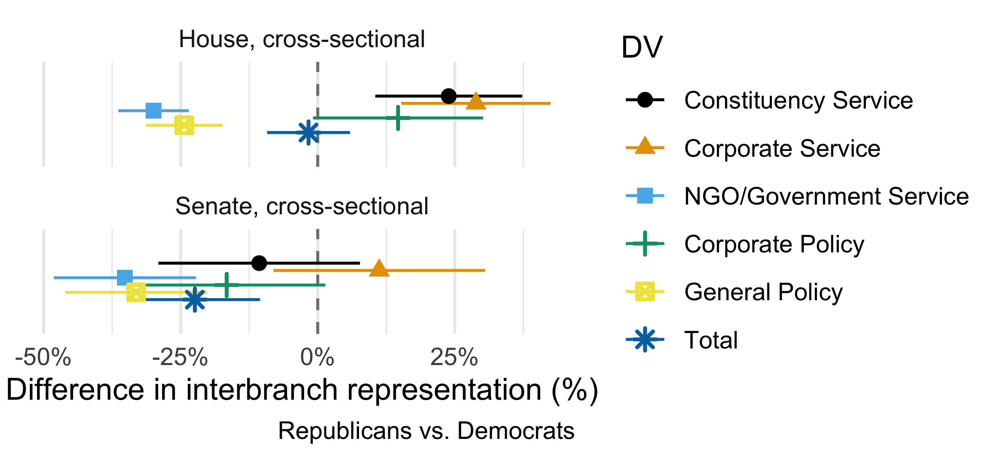
We had no expectations for the effect of partisanship on total interbranch representation, and indeed, Republicans and Democrats do not significantly differ in their overall levels of interbranch representation in the House. However, Republicans in the Senate do less overall. We also did not have theoretical expectations for party differences in our other subtypes of interbranch representation. Still, we see significant party differences in our three other categories: individual constituency service, nonprofit and local government constituency service, and general policy work. Notably, holding all else equal, House Republicans do significantly more individual constituency service than House Democrats (24% more), while Democrats do significantly more nonprofit/local government service and more general policy work (more than 25-30% more in the House and Senate). These results highlight the payoff from our hand-coding. If we were to look only at total levels of interbranch work, we would conclude that House Democrats and Republicans are no different. But similar overall levels mask large differences in who members of each party are representing.
Exactly why House Republicans (specifically, as we show below, moderate House Republicans) appear to be doing more individual constituency service work should be the subject of future research. There are several possibilities. One possibility is that the lower cost of living in districts represented by Republicans may allow Republicans to hire more district staff despite allocating the same share of their budget, on average, to constituency service. If House Republicans represent districts with more seniors and veterans, these high-demand groups may lead them to do more individual constituency service work that involves veterans and seniors through the VA and the Social Security Administration. However, we also know that Republicans do much less work on behalf of immigrants (Snyder et al. 2025). The large volume of individual constituency service on behalf of immigrants contained in our data thus makes this explanation unlikely. Another possibility is that House Republicans’ antigovernment ethos does not extend to the parts of the administrative state that support their policy goals, especially those that maintain the status of relatively powerful groups and institutions, like the military and law enforcement (Soss and Weaver 2017; Chertoff and Bulman-Pozen 2025). A fourth potential explanation is that Republicans do more constituency service not in spite of their antigovernment preferences, but because of them. In other words, Republicans may wish to claim credit for helping constituents solve problems with a government that they view as broken and wasteful. The fact that constituency service often involves helping individuals recover money from the federal government—a highly individualized form of “saving taxpayer money”—is consistent with this explanation. Ultimately, however, these results are unable to tell us whether this partisan difference is a function of something about Republican-leaning districts, the Republican Party as an organization, the orientation of its members toward the role of government, or some other correlate of party membership. To explore this result further, we next test our hypothesis about Tea Party/Freedom Caucus members specifically.
Antigovernment legislators do less policy work and more individual service
Figure 7.5 compares the legislators on the right-wing end of the ideological spectrum, often but not always members of the Tea Party or Freedom Caucus within the Republican Party, to all other legislators in their provision of interbranch representation.6 Consistent with our expectations, legislators on the extreme ideological end of the Republican Party in both chambers do less interbranch representation overall (10-25% less), including far less nonprofit and local government service (30-50% less), less general policy work (13-15% less), and less corporate policy (15-40% less). Right-wing members of the Senate do significantly less constituency service (25% less). The numbers are roughly the same whether we compare this group to all other members or just to more “moderate” Republicans.
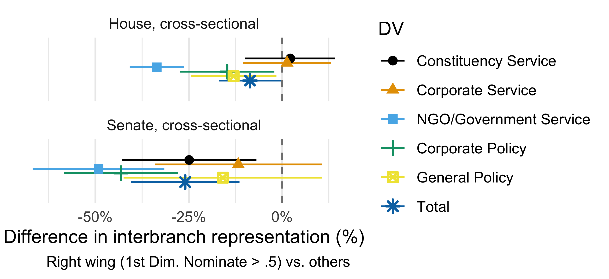
Turning to corporate service, we see that Right-wing House members do substantially more corporate service work than their peers (+31%). The corporate service increase is less surprising given our previous hypothesis and finding about the Republican Party overall being more supportive of corporate interests. And, indeed, though the results are not significant in the Senate, we find a point estimate of an increase of 13% there.
Electoral Results
We turn next to considering what has long been considered the canonical motivation behind constituency service: electoral incentives (Hypothesis 3B). We first consider the relationship between competitive elections (general and primary) and interbranch representation. We then turn to considering the impact of corporate PAC contributions of corporate forms on interbranch representation (service and policy). We look at the overall relationship between corporate PAC contributions and interbranch representation and then consider a case study of energy PAC contributions on energy interbranch representation.
Competitive General Elections May Select House Members, and Competitive Primaries May Change Them
Figure 7.6 shows differences across chambers and across model specifications in the relationship between electoral competitiveness and interbranch representation. Legislators could face electoral pressure at either the primary or general election stage. Figure 7.6 (a) shows the impact of a prior competitive general election, while Figure 7.6 (b) shows the impact of a prior competitive primary election. We start by considering the impact of electoral competition for House members. If we look across members, we find that House members whose prior general election was competitive do about 12% more constituency service for individuals and 15% more for businesses than members in safe seats (Figure 7.6 (a)). But when we look to the within-member House model, we see that when the same House member’s seat becomes competitive in the general election, their constituency service does not increase (Figure 7.6 (a), House diff-in-diff panel). This pattern is consistent with the idea that competitive House districts might help select legislators who do more constituency service, rather than competition changing legislator behavior. However, the primary election results tell a slightly different story, where we see no differences cross-sectionally for competitive primaries but do find effects in the difference-in-difference models. Here we see that close primaries may push legislators to do 14% more individual constituency service in the next Congress — evidence consistent with the idea that legislators are responding to competitive electoral environments.
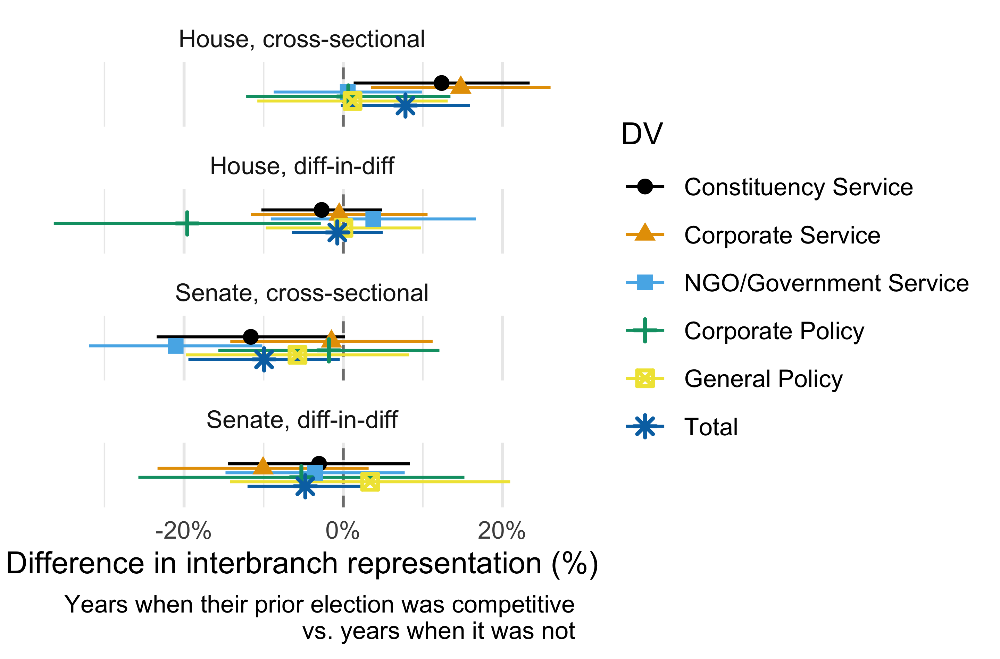
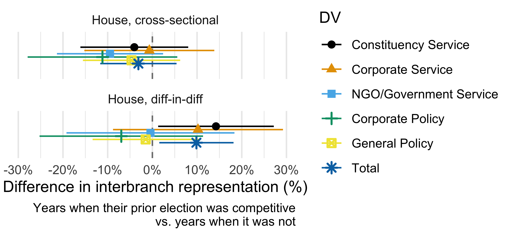
More puzzling for all election-based stories are the Senate results, where we see no positive impacts of electoral competitiveness on any form of interbranch representation regardless of model specification (within or between legislators). On the Senate side, we actually see a very different story where competitive seats are associated with less work on behalf of nonprofits and local governments (-21%) and total interbranch representation (-10%), but this difference disappears within legislators.
Legislators who receive more corporate PAC money do more corporate interbranch representation, but corporate PAC money does not change their behavior
Next we examine the impact of corporate PAC campaign contributions on corporate forms of interbranch representation (Figure 7.7). The upper panel shows the cross-sectional model, while the lower panel shows the diff-in-diff model for all legislators. The panels show the impact of a one standard deviation increase in PAC contributions. Consistent with our expectations, in the cross-sectional model we see that legislators who receive more corporate PAC money do more corporate interbranch representation (4% corporate service, and 3.8% corporate policy), though those effect sizes are modest. It is also worth noting that those legislators who receive more corporate money appear to do slightly more of all forms of interbranch representation.
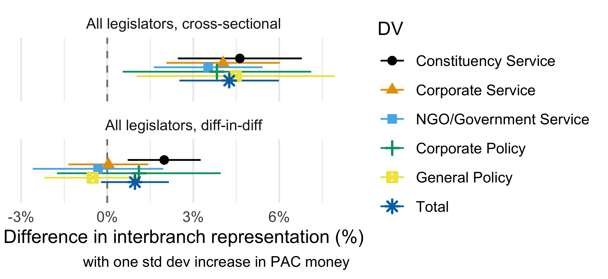
A tricky question is whether corporate PAC money appears to change legislators’ behavior. Here, our within-legislator diff-in-diff model can speak to this question. We see no support for corporate PAC money changing legislators’ corporate interbranch behavior (a 0.0% predicted change in corporate service, and an insignificant increase in corporate policy). Surprisingly, in the diff-in-diff model we see legislators doing slightly more individual constituency service (2.0%).
Case Study: Energy PAC Campaign Contributions and Corporate Constituency Service to the Department of Energy
Instead of just considering the impact of all corporate PAC contributions on corporate interbranch representation, here we turn to a case study of corporate constituency service directed toward the Department of Energy. By focusing on work with agencies related to energy policy, we can look more specifically at campaign contributions the legislator received from the energy sector political action committees, as opposed to the total corporate PAC contributions we examined in the previous section and models. We think this more specific test is a better test of the hypothesis.
Figure 7.8 (a) shows the impact of a one standard deviation increase in energy PAC contributions on interbranch contacts with the Department of Energy. In comparison, Figure 7.8 (b) shows the impact of a one standard deviation increase in PAC contributions from non-energy PACs on interbranch contacts with the Department of Energy. Our donor impact hypothesis would suggest there should be a relationship between energy PAC contributions, but not non-energy PAC contributions, and Department of Energy contacts. The results largely support that pattern. Looking cross-sectionally, we see legislators who receive more energy PAC contributions do more corporate service (10%), corporate policy (37%), general policy (32%), and total interbranch (13%) work with the Department of Energy. If we then turn to our more rigorous diff-in-diff model to look at change in behavior within legislators, we see that receiving more energy sector PAC contributions results in more general policy work (19%) and total interbranch representation (12%) with the agency. Somewhat surprisingly, the effects of PAC contributions on corporate policy and corporate service are not statistically significant, though the effects are in the expected direction.
For non-energy PAC contributions—analogous to a placebo in this case— we see no increases in interbranch representation with the Department of Energy. Cross-sectionally, legislators who get more energy-sector PAC contributions do less work with the Department of Energy, but this is not causal. No other relationships are statistically significant.
This case study and placebo, together, lend some support to the notion that PAC contributions influence behavior. However, the fact that the relationships are stronger with representation of noncorporate constituents than corporate constituents suggests that the logic of Hypothesis 3B(donors) is not the best explanation for this variation.
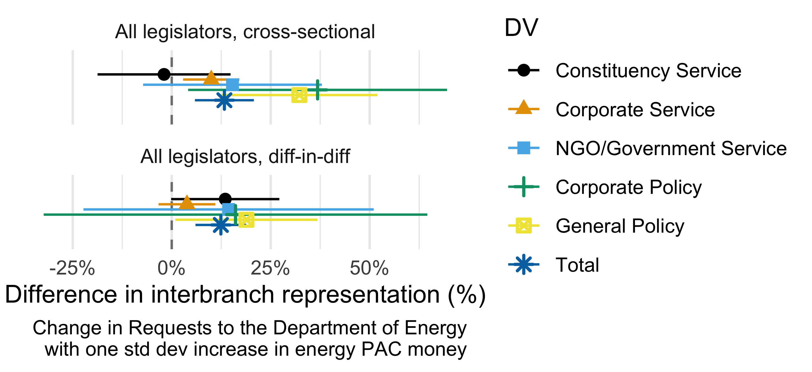
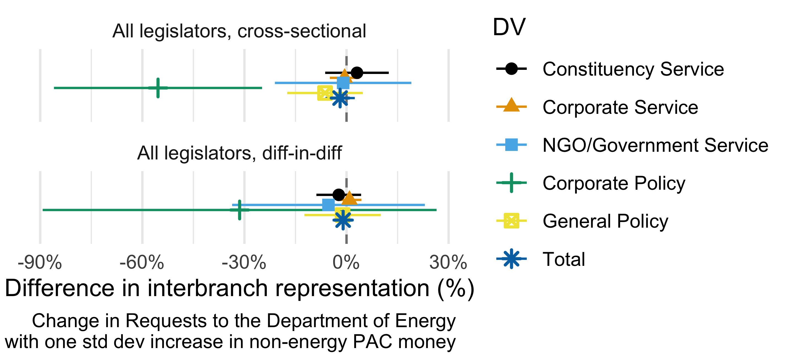
Institutional
We consider institutional incentives through the lens of majority and minority status (Hypothesis 3C). We expect members of the majority party to do less interbranch representation because they are better able to pursue their policy goals legislatively. However, because majority party status is strongly correlated with committee chair positions that provide capacity for more interbranch representation, estimating the effect of majority status is complicated. The results depend on which majority party members we compare with minority party members. For the subset of legislators who are committee chairs, controlling for committee chair status could absorb any effect that majority party status grants on its own. Therefore, we present two versions of our models that test this hypothesis: one with controls for committee chair status and one without.
Members of the House Majority do more General Policywork and Less Constituency Service
The upper panels of Figure 7.9 show the impact of majority status in the U.S. House of Representatives. We focus first on the House, because House members experience the greatest change in their role and influence when their party wins and loses majority status. Figure 7.9 (a) shows the impact of majority status overall, and Figure 7.9 (b) shows the impact of majority status after controlling for committee leadership positions—some of the mechanisms for how the majority wields its influence. We can think of that second model as capturing the impact of majority status for backbench members — i.e., those who do not hold a committee leadership position. We focus our attention on the diff-in-diff specification, which estimates the within-legislator change into or out of majority status. Consistent with our expectations, we find that when a legislator’s party wins majority status in the House, they do less individual constituency service (-6%) and less nonprofit and local government service (-10%). Essentially, we see members of the minority party potentially prioritizing constituency service when they face greater obstacles in the legislative process (fewer votes, no agenda control, no committee chairs). Those effect sizes are fairly stable when we add committee leadership controls (individual constituency service: -6% to -5%; nonprofit and local government service: -10% to -12%).
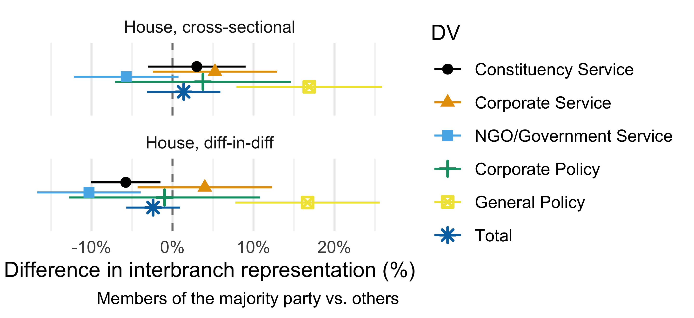
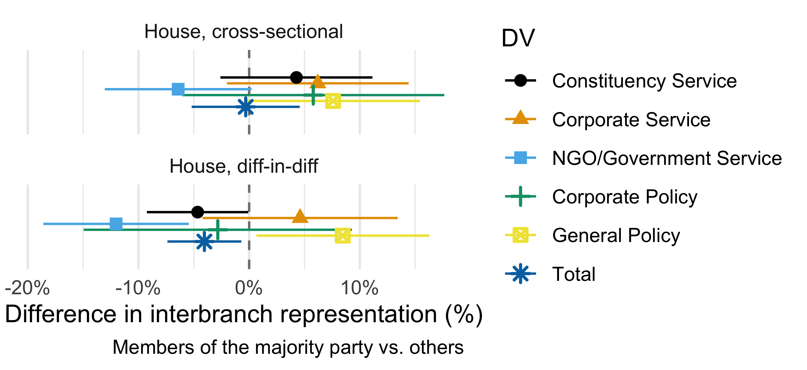
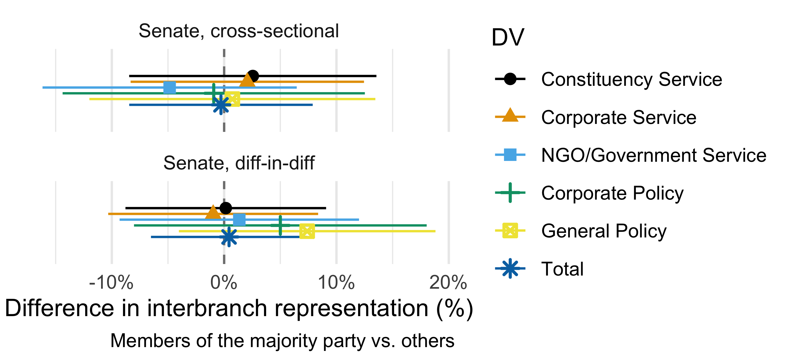
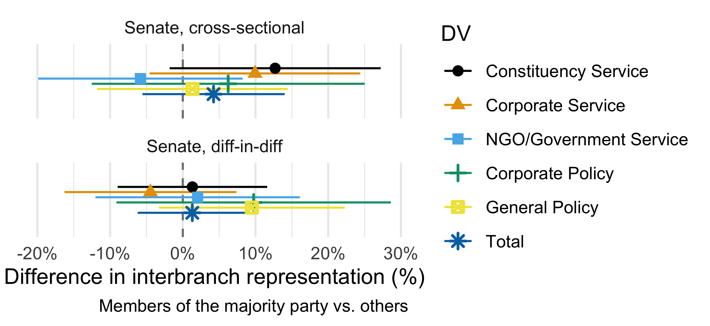
Conversely, on the policy side, we see gaining majority status pushes legislators to do more general policy work. One possible source of this increase is requests for information from agencies related to legislative drafting, which we coded as policy work (though this is far from the largest category of policy work). Unsurprisingly, on the policy side, committee leadership controls have a large impact on the magnitude of the effect. Adding leadership controls cuts the effect of majority status on policy work nearly in half (+17% to 8.5%). This suggests that much of the additional policy work done by members of the majority is done by committee chairs, consistent with our findings in Chapter 6. Once we control for that extra policy work done by committee chairs in the majority, we see that the effect of majority status on the total interbranch work becomes significant. Members of the majority party do about 4% less total interbranch representation.
In the U.S. Senate, we find no significant impact of majority status in any of our Senate models regardless of specification (cross-sectional or diff-in-diff), or committee leadership controls (the lower panels in Figure 7.9). There are several possible explanations for these differences in how the institutional environment shapes legislators’ strategic incentives between the House and Senate. Foremost among these explanations is the stark difference in the impact of majority status on the power of individual legislators between the chambers. The Senate continues to provide greater power to individual legislators through the filibuster and supermajority cloture requirements, which makes the switch between majority and minority status less salient absent supermajority control, which never occurs during our time period. For this reason, we might expect the impact of majority status to be weaker for Senators than for House members. Another potential explanation is that there are many fewer U.S. Senators than House members, which contributes to the much wider confidence intervals for our Senate estimates.
More Casework Staff, More Casework
Finally, we turn to the mechanism of how member offices translate their priorities into action, by considering how they allocate their staff into different roles. Figure 7.10 shows the allocation of congressional staff across different role types over time. While the number of policy staff in member offices has gradually increased, we see no such change for constituent casework staff over time.
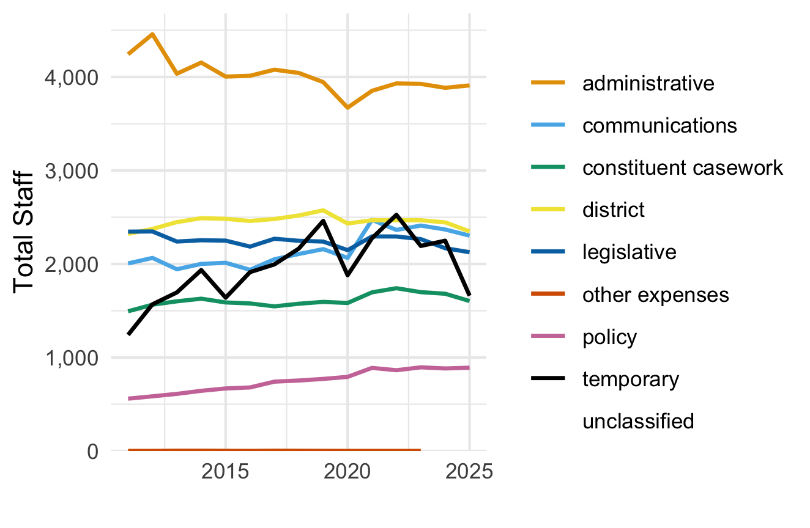
Figure 7.11 shows the marginal effect of an increase of one standard deviation in the number of constituency service staff members. The number of casework staff ranges from 0 to 10 in the House, with an average of 2, and from 0 to 20 in the Senate, with an average of 5. For the pooled model shown in Figure 7.11, one standard deviation is 2 staffers. We find that legislators who allocate more staff to constituency service do more constituency service. This pattern is true in both the House and the Senate. About half of the difference appears to be causal; when legislators add more constituency service staff, we see them do more individual constituency service work. Because constituency services is a large share of total interbranch representation, we see more constituency service staff leading to more total interbranch representation.
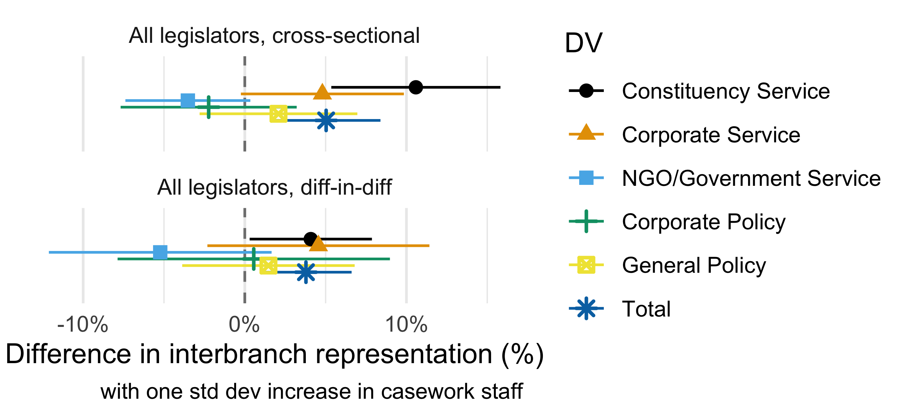
7.4 Summary of Results
Table 7.2 summarizes our results for our hypotheses across all of our different measures. Each cell shows the result for the cross-sectional model followed by the result for the difference-in-differences model. “-” signs indicate that it wasn’t possible to estimate that type of model. Collectively, we see at least partial support for all of our strategic incentive hypotheses.
| Indicator | Indiv. service | Corp. service | 501c3 or gov’t service | General policy | Corp. policy | Total |
|---|---|---|---|---|---|---|
| Partisan and ideological effects are driven more by alignment than antagonism. Interbranch work targets allied agencies and administrations. Agency antagonism only appears for corporate policy. Republicans do more corporate service. Right-wing House members do less policy; Right-wing senators do less of all types of interbranch work. | Partisan and ideological effects are driven more by alignment than antagonism. Interbranch work targets allied agencies and administrations. Agency antagonism only appears for corporate policy. Republicans do more corporate service. Right-wing House members do less policy; Right-wing senators do less of all types of interbranch work. | Partisan and ideological effects are driven more by alignment than antagonism. Interbranch work targets allied agencies and administrations. Agency antagonism only appears for corporate policy. Republicans do more corporate service. Right-wing House members do less policy; Right-wing senators do less of all types of interbranch work. | Partisan and ideological effects are driven more by alignment than antagonism. Interbranch work targets allied agencies and administrations. Agency antagonism only appears for corporate policy. Republicans do more corporate service. Right-wing House members do less policy; Right-wing senators do less of all types of interbranch work. | Partisan and ideological effects are driven more by alignment than antagonism. Interbranch work targets allied agencies and administrations. Agency antagonism only appears for corporate policy. Republicans do more corporate service. Right-wing House members do less policy; Right-wing senators do less of all types of interbranch work. | Partisan and ideological effects are driven more by alignment than antagonism. Interbranch work targets allied agencies and administrations. Agency antagonism only appears for corporate policy. Republicans do more corporate service. Right-wing House members do less policy; Right-wing senators do less of all types of interbranch work. | Partisan and ideological effects are driven more by alignment than antagonism. Interbranch work targets allied agencies and administrations. Agency antagonism only appears for corporate policy. Republicans do more corporate service. Right-wing House members do less policy; Right-wing senators do less of all types of interbranch work. |
| President’s party | n.s./↑ | n.s./n.s. | ↑/↑ | n.s./n.s. | ↑/↑ | n.s./↑ |
| Ideological distance | n.s./– | n.s./– | ↓/– | ↓/– | ↑/– | ↓/– |
| Republican | ↑/– | n.s./– | n.s./– | |||
| Right wing (House) | ↑/– | ↑/– | ↓/– | ↓/– | n.s./– | n.s./– |
| Right wing (Senate) | n.s./– | n.s./– | ↓/– | ↓/– | ↓/– | ↓/– |
| Electoral competitiveness effects are limited to the House. Representatives from competitive House districts do more constituent service After facing a competitive primary, representatives may do more service. Corporate PAC donations are correlated with all kinds of work. Within legislators, more money does not induce more corporate work. | Electoral competitiveness effects are limited to the House. Representatives from competitive House districts do more constituent service After facing a competitive primary, representatives may do more service. Corporate PAC donations are correlated with all kinds of work. Within legislators, more money does not induce more corporate work. | Electoral competitiveness effects are limited to the House. Representatives from competitive House districts do more constituent service After facing a competitive primary, representatives may do more service. Corporate PAC donations are correlated with all kinds of work. Within legislators, more money does not induce more corporate work. | Electoral competitiveness effects are limited to the House. Representatives from competitive House districts do more constituent service After facing a competitive primary, representatives may do more service. Corporate PAC donations are correlated with all kinds of work. Within legislators, more money does not induce more corporate work. | Electoral competitiveness effects are limited to the House. Representatives from competitive House districts do more constituent service After facing a competitive primary, representatives may do more service. Corporate PAC donations are correlated with all kinds of work. Within legislators, more money does not induce more corporate work. | Electoral competitiveness effects are limited to the House. Representatives from competitive House districts do more constituent service After facing a competitive primary, representatives may do more service. Corporate PAC donations are correlated with all kinds of work. Within legislators, more money does not induce more corporate work. | Electoral competitiveness effects are limited to the House. Representatives from competitive House districts do more constituent service After facing a competitive primary, representatives may do more service. Corporate PAC donations are correlated with all kinds of work. Within legislators, more money does not induce more corporate work. |
| Competitive general (House) | ↑/n.s. | ↑/n.s. | n.s./n.s. | n.s./n.s. | n.s./↓ | n.s./n.s. |
| Competitive general (Senate) | n.s./n.s. | n.s./n.s. | ↓/n.s. | n.s./n.s. | n.s./n.s. | ↓/n.s. |
| Competitive primary (House) | n.s./↑ | n.s./n.s. | n.s./n.s. | n.s./n.s. | n.s./n.s. | n.s./↑ |
| Corporate PAC money | ↑/n.s. | ↑/n.s. | ||||
| Energy PAC money‡ | ↑/n.s. | ↑/↑ | ↑/n.s. | ↑/↑ | ||
| Placebo: non-energy PAC money‡ | n.s./n.s. | n.s./n.s. | ↓/n.s. | n.s./n.s. | ||
| Institutional incentives shape the representatives’ work. When their party wins a majority, members of the House do more general policy work and less service. No significant differences in the Senate. | Institutional incentives shape the representatives’ work. When their party wins a majority, members of the House do more general policy work and less service. No significant differences in the Senate. | Institutional incentives shape the representatives’ work. When their party wins a majority, members of the House do more general policy work and less service. No significant differences in the Senate. | Institutional incentives shape the representatives’ work. When their party wins a majority, members of the House do more general policy work and less service. No significant differences in the Senate. | Institutional incentives shape the representatives’ work. When their party wins a majority, members of the House do more general policy work and less service. No significant differences in the Senate. | Institutional incentives shape the representatives’ work. When their party wins a majority, members of the House do more general policy work and less service. No significant differences in the Senate. | Institutional incentives shape the representatives’ work. When their party wins a majority, members of the House do more general policy work and less service. No significant differences in the Senate. |
| Majority (House) | n.s./↓ | n.s./n.s. | n.s./↓ | ↑/↑ | n.s./n.s. | n.s./↓ |
| Majority (Senate) | n.s./n.s. | n.s./n.s. | n.s./n.s. | n.s./n.s. | n.s./n.s. | n.s./n.s. |
| Staff allocation: supported. Offices with more casework staff do more individual service. | Staff allocation: supported. Offices with more casework staff do more individual service. | Staff allocation: supported. Offices with more casework staff do more individual service. | Staff allocation: supported. Offices with more casework staff do more individual service. | Staff allocation: supported. Offices with more casework staff do more individual service. | Staff allocation: supported. Offices with more casework staff do more individual service. | Staff allocation: supported. Offices with more casework staff do more individual service. |
| Casework staff | ↑/↑ | n.s./n.s. | n.s./n.s. | ↑/↑ |
In considering our partisan and ideological incentives, on the whole we see alignment outweighing antagonism in shaping interbranch representation. Members of the president’s party do more individual service, nonprofit/local government service, corporate policy, and total interbranch representation. Similarly, those ideologically aligned with an agency do more nonprofit service, general policy work, and total interbranch representation. We also see Republicans engaging in more corporate service work on behalf of their traditional business coalition. We also see antigovernment Republicans (those in the Tea Party and Freedom Caucus) engaging in less policy work, and less total interbranch representation.
But partisan and ideological alignment doesn’t always win out. On the antagonist side, we see those who are ideologically distant from an agency engaging in more corporate policy work with that agency (think, for example, of conservatives doing more corporate policy work with the EPA). We also see those antigovernment Republicans in the House (Tea Party and Freedom Caucus members) engaging in more individual constituency service and corporate service—perhaps pushing back against a bureaucracy they loathe on behalf of their constituents.
A surprising finding not linked to any of our hypotheses is that Republican legislators, including Right-wing Republicans who could be members of the Tea Party or Freedom Caucus, do more constituency service on behalf of individuals. We had expected Right-wing legislators to do less interbranch representation overall because of their general antigovernment ideology, but this was not the case. One possible explanation for this relationship is that Republicans view individual constituency service as an opportunity to highlight the failures of government. For example, returning a large tax refund to a constituent from the IRS or helping a Social Security beneficiary receive delayed benefits would allow a Republican legislator to claim credit for helping constituents cut through “red tape” and receive what the government owes them as a taxpaying citizen. Testing this explanation is beyond the scope of our analysis here. However, our findings still reveal a surprising way in which constituency service might be ideological or partisan, especially if this explanation is true. Interestingly, both parties, in theory, could claim to “own” constituency service as something that accords with their goals—while Republicans could describe their constituency service work as making sure that the federal government is not unfairly taking people’s money or making things harder than necessary for individuals, Democrats could just as easily describe this kind of work as helping members of underserved communities get what they need from government. These unexpected findings provide an interesting contribution to the nascent literature on constituency service and partisanship, which has mostly examined that relationship from constituents’ perspectives (e.g. Wagner 2007; Snyder 2024).
On the electoral side, despite the robust literature tying constituency service to reelection concerns, we see only a conditional relationship. We find that competitive general elections appear to help select legislators who do more service (from the cross-sectional model results), but competitive general elections don’t change a legislator’s behavior. Instead, we see competitive primary elections appearing to change behavior, where after a competitive primary, House members do more constituency service. Surprisingly, given the greater competitiveness of Senate elections, we see almost no relationship between electoral competitiveness and interbranch representation. The sole exception to that dynamic is that cross-sectionally, we see Senators from more competitive states doing less total interbranch representation, and less nonprofit and local government service.
On the institutional side, we find interesting cross-chamber differences, consistent with each chamber’s institutional rules. In the House, where Majority Status matters more, we see strong majority status effects in the difference-in-difference models, suggesting changed member behavior when their party moves into the majority. These new majority members do more general policy work—especially committee chairs, but they do less individual constituency service, nonprofit/local government service, and less total interbranch representation. This pattern is consistent with the idea that legislators who find themselves shut out of the lawmaking process while in the minority may reallocate their efforts to activities like constituency service. On the Senate side, where the chamber operates more through either unanimous consent agreements or supermajority cloture votes (3/5), we find majority status alone does not change behavior.
Finally, we turn to our mechanism of constituency service staff. Consistent with our expectations, we see that increasing the number of constituency service staff members increases the amount of individual constituency service work and total interbranch representation work. Moreover, that finding holds within legislators. Somewhat surprisingly, we see that this finding is confined to individual constituency service, and we observe no increase in corporate or nonprofit/local government service when the number of constituency service staff is increased.
7.5 Conclusion: Incentives Shape Interbranch Representation
That the political environment would shape what politicians do may not be a surprising finding to any political scientist, but measuring and evaluating what incentives matter, and how they change behavior can tell us a lot. We find at least partial support for all of our strategic incentives hypotheses: partisan/ideological, electoral, and institutional, as well as support for our mechanism of staff allocation.
Next, we’ll attempt to zoom out and discuss more broadly how our findings about demand, capacity, and strategic incentives change our understanding of congressional representation and democratic governance more broadly Chapter 8. We also explore new questions about conceptualizing and measuring legislative effectiveness in Congress and whether our patterns of interbranch representation can be explained by variation in legislative styles. We conclude by considering practical implications of interbranch representation, how the casework-to-policy feedback loop can be improved, how interbranch representation might be changing under the second Trump administration, and future areas of research.
The behavior we are documenting in this book is the congressional portion of that relationship; it is legislators reaching out to executive branch agencies. To actually deliver results to their constituents, the agencies need to cooperate. If legislators of the president’s party think they are more likely to receive higher levels of cooperation from executive branch agencies, they may be motivated to attempt interbranch representation at higher rates.↩︎
Technically, 0 has no special meaning on these latent scales, and there is no reason that -1 and 1 are equally ideologically distant. However, the Richardson et al. (2018) scale is locally identified to have mean 0, so absolute value serves as a linear measure of distance from the mean. Moreover, agencies with ideological scores near zero include the National Aeronautics and Space Administration (NASA), National Institute of Standards and Technology (NIST), and Veterans Benefits Administration (VBA), which are agencies that respondents presumably would perceive to be neither liberal nor conservative when responding to the survey question, suggesting 0 could be considered “moderate” by survey respondents in the same way that a more bipartisan voting record leads to a “moderate” NOMINATE score. Richardson et al. (2018) estimate subagency-specific perceived ideology scores for many sub-agencies in our data. For sub-agencies that do not have a specific score, we use their department’s score. Six small, extremely low-salience independent agencies or commissions do not have a score. We assign them a score of 0. This makes the measure of distance for these agencies the same as the absolute value of a member’s first-dimension DW-NOMINATE score, which we control for in all models, making it extremely unlikely that these agencies influence the results. These six were the American Battle Monuments Commission (ABMC), the Court Services and Offender Supervision Agency (CSOSA), National Capital Planning Commission (NCPC; despite making the news in 2026, it is reasonable to assume it did not have a strong partisan perception or partisan political engagement prior), U.S. Nuclear Waste Technical Review Board, the Postal Regulatory Commission (PRC), and the U.S. Railroad Retirement Board (RRB)↩︎
In this case we see very similar patterns of results in the cross-sectional and diff-in-diff models, though a few coefficients that are significant in the diff-in-diff fail to reach conventional levels of significance in the cross-sectional models.↩︎
Ideological distance ranges from 0 to 2.66 with a standard deviation of 0.54. We can only estimate the cross-sectional model here, because we lack enough variation in NOMINATE scores to estimate the diff-in-diff.↩︎
Judge-Lord (2021) also finds that these business coalitions are more successful in getting their desired changes between draft and final agency rules when more members of Congress submit supportive public comments.↩︎
All results are nearly identical if we include a control for “left wing” (DW NOMINATE < -0.5), thus comparing the right wing to moderates instead of all other legislators.↩︎